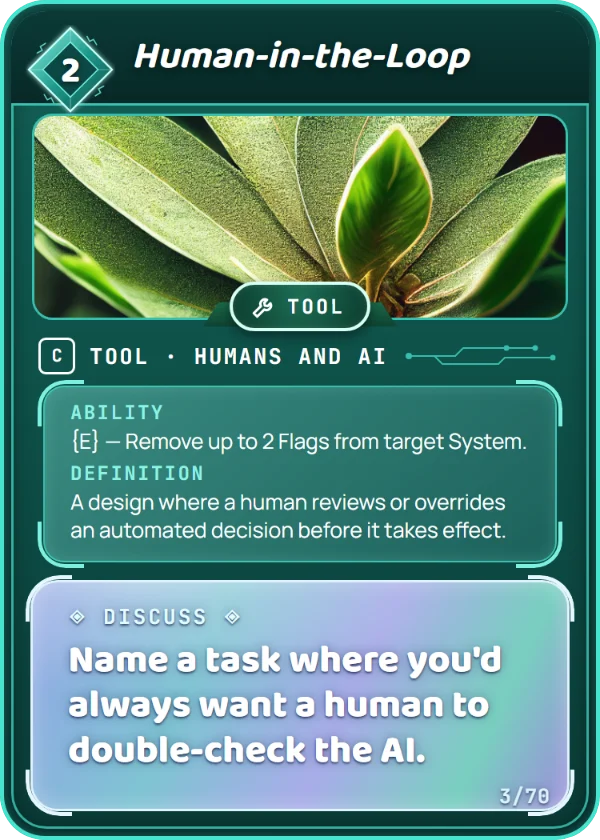
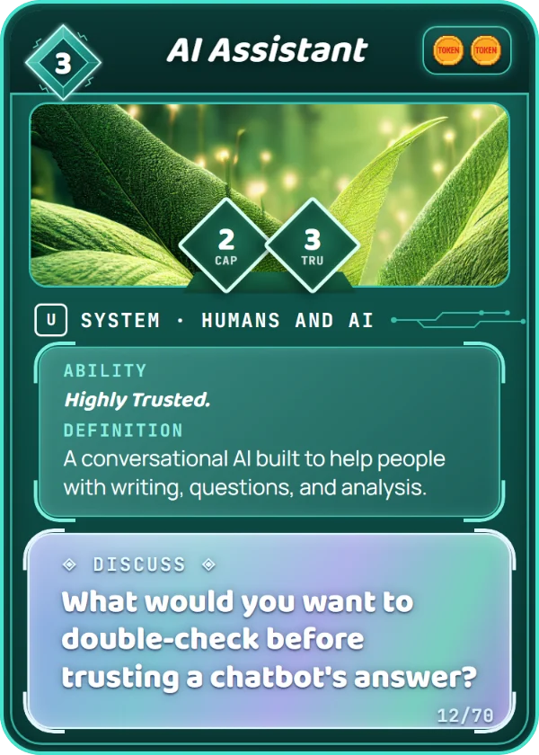
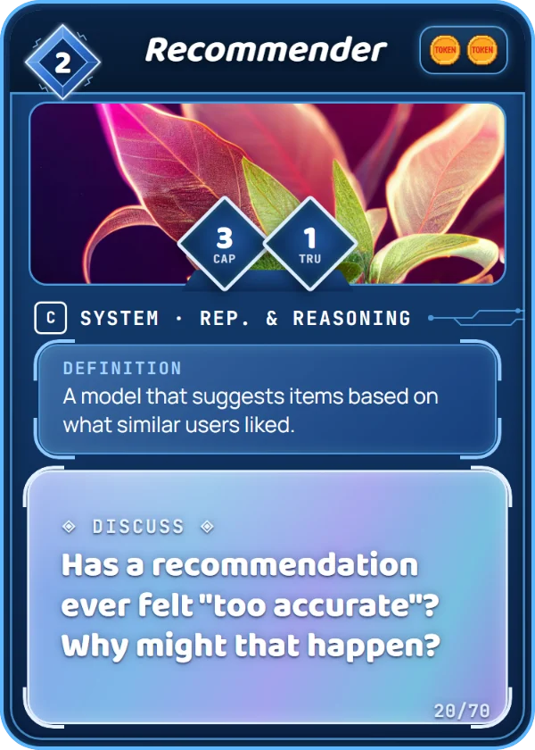
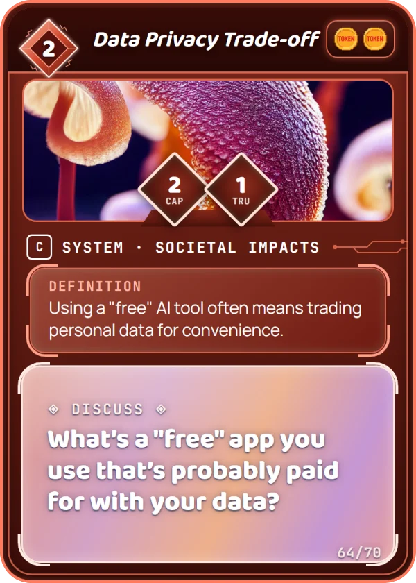
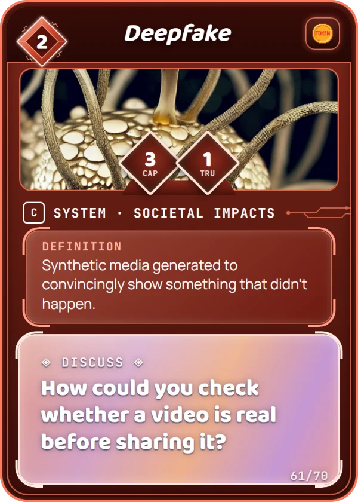

Draw the Line
Students place Tokens cards on a five-step line, from Totally Fine to Crosses a Line, then compare where they put them and agree on a class line. There are no right answers. The point is to hear why people draw their lines in different places.





1Get ready
- Print the five line headers (page 3), one set per group, and lay them in a row.
- Pick 8–12 cards that cover the whole line (see the card sets on page 2). Each group gets the same cards.
- Choose one setting and write it on the board: "Using this to help with your homework." The setting matters: the same card can land in a different place somewhere else.
2Place the cards alone
Each student places every card on their own line, without talking. Ask them to read the card's definition first. Students can jot their line down or photograph it.
3Compare with a partner
Partners find the card they disagree on most, and each explains their choice. If they're stuck, they read that card's Discuss question out loud.
"I put ___ on Feels Sketchy because ___."
"I'd move it to ___ if ___."
4Draw the class line
As a whole class, go card by card. Start with the cards where groups disagreed most. Agree where each card goes for this setting, and where the class draws its line: which cards are on the OK side, and which are past it.
Decide up front how the class will decide: a vote, agreement, or the teacher's call. If you overrule a choice, explain your thinking.
5Keep the line
Photograph the final line and post it. Next time, change the setting and run it again: which cards move, and why?
6Wrap up
Ask: "Which card was hardest to place? What would make it feel more OK?" Answers often name the ideas on other cards: a human checking the AI, privacy protection, being open about how it works.
7Settings to try
| Setting | A card that tends to move |
|---|---|
| Helping with your homework | AI Assistant: explaining a math step vs. writing the whole essay |
| Used by our school | Predictor: guessing which students need extra help |
| In your town | Data Center: new jobs vs. the water and power it uses |
| For a 10-year-old | Chatbot: a friendly helper, or a stand-in for real friends? |
| Making a video for social media | Deepfake: a funny face swap with permission vs. without it |
| At a doctor's office | Human-in-the-Loop: does a person check every AI decision? |
8Card sets
| AI in your life start here | Human-in-the-Loop, AI Assistant, Built-in AI, Chatbot, Recommender, Predictor, Agent, Cognitive Offload, Data Privacy Trade-off, Deepfake |
| AI in the world | Safety Lab, Red Teaming, Large Language Model, Viral App, Fast-Moving Lab, Data Center, Job Disruption, Environmental Footprint, Digital Divide, Regulation Debate |
| Fair and safe | Bias Audit, Explainability, Informed Consent, Model Card, Privacy Shield, Bias in Data, Training Data, Classifier, Sensor, Manual Override |
Cards that describe a use of AI (Chatbot, Recommender, Deepfake) work best. Read a card as "Using a ___ for this setting." For safeguard cards like Bias Audit, read "Skipping the ___."
9Variations
Adapted from "Align on the Line: Making Ethical Lines Visible" by Beck Tench & Emily Weinstein, created by the Center for Digital Thriving at the Harvard Graduate School of Education and published by the AI Pedagogy Project (aipedagogy.org/assignment/align-on-the-line-making-ethical-lines-visible), licensed CC BY-NC-SA 4.0. Changes: Tokens cards replace the brainstormed AI uses; settings, card sets, and game variations added. This adaptation is also licensed CC BY-NC-SA 4.0.
Totally Fine
I'd use this without a second thought.
Mostly OK
Fine, with a little care.
Not Really Sure
It depends. I'd want to know more.
Feels Sketchy
Something about this seems off.
Crosses a Line
Not OK in this setting.